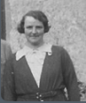

JESSIE ANNE GRANT
Born: 22nd December 1899 in Boharm, Banffshire,Scotland
Died: 16th September 1960 in Spynie Hospital, Elgin,Scotland
Occ: Typest in 1924
Notes
Married: 24th September 1924 at Station Hotel, Elgin
WILLIAM DAVID CRUICKSHANK
Born: c1895
Died: 1970
Occ: Postman in 1924
Children:
William James(1825)
John Grant(1927)
Additional Child of Jessie Grant to a father unknown:
Jemima Grant(1918)
[ Liddle Home ]
[ Grant Home ]